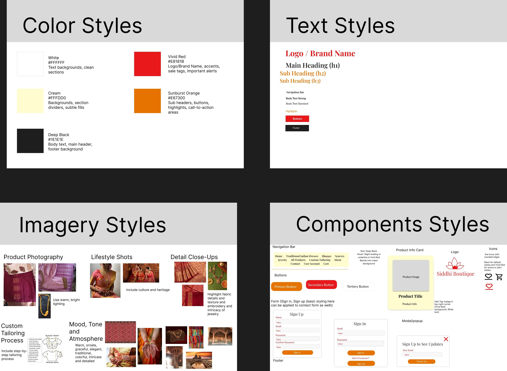
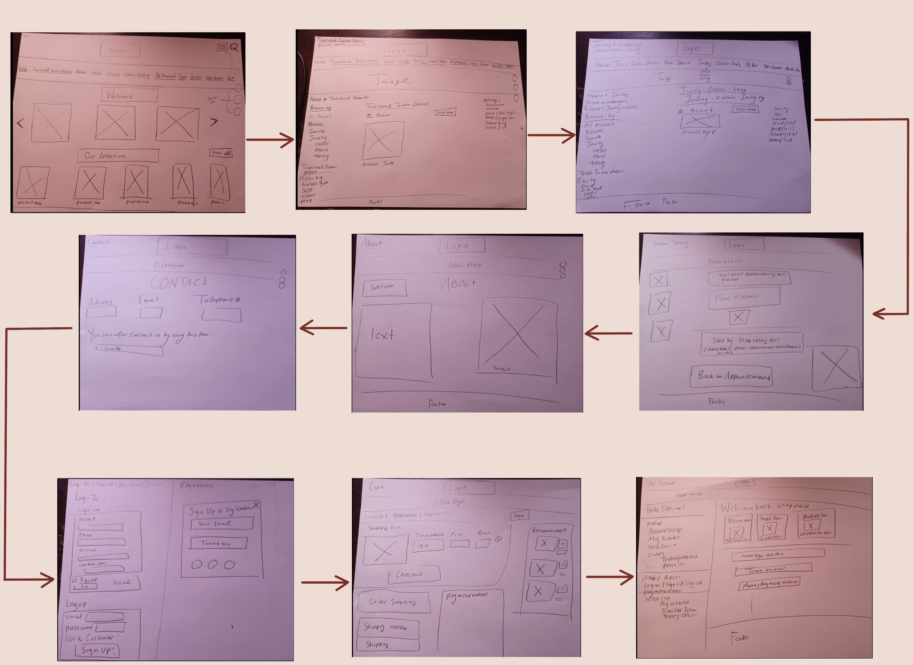
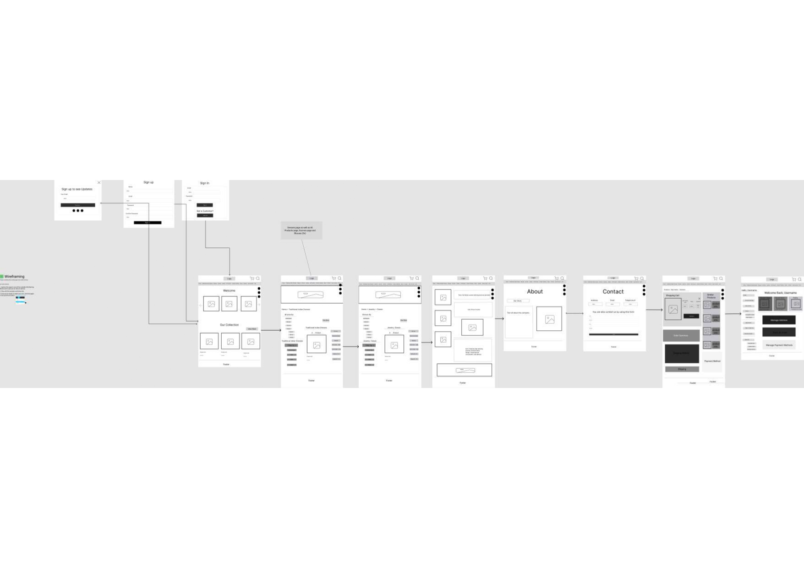
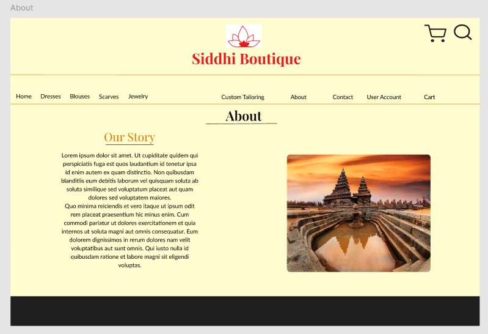
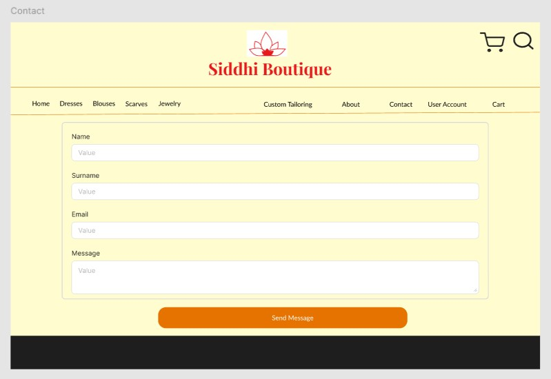
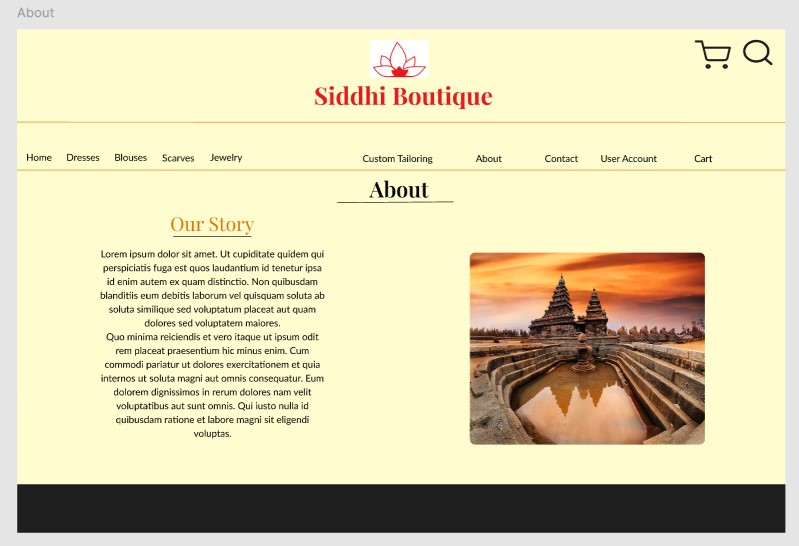
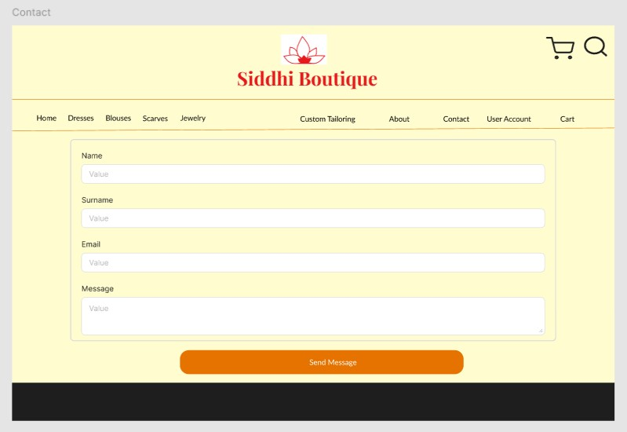
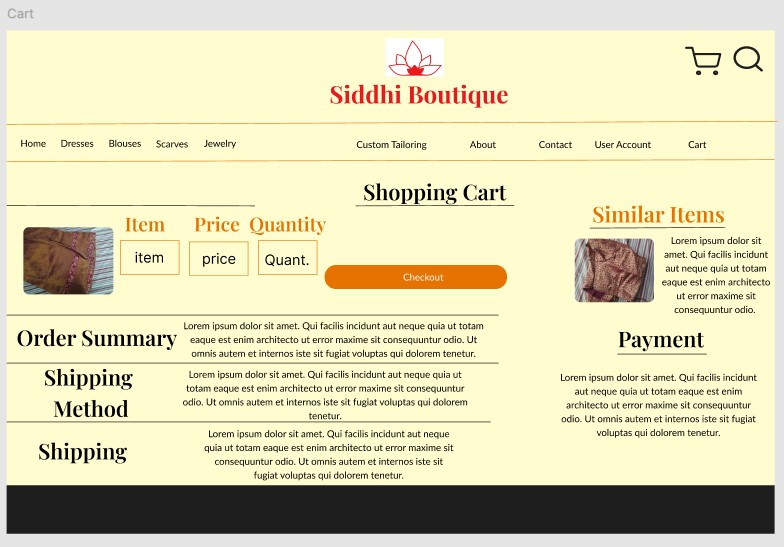
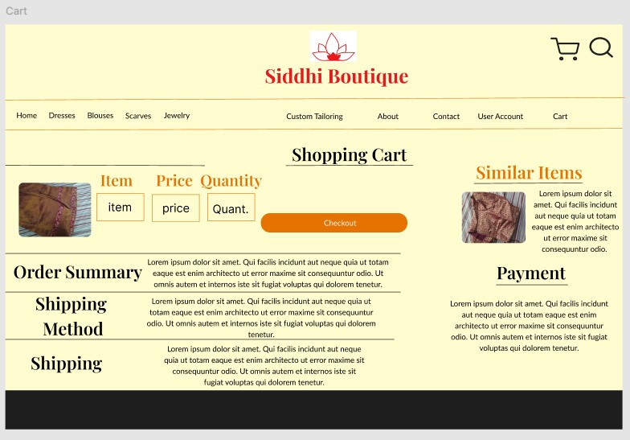

Siddhi Boutique
Siddhi Boutique is a.
Overview
Role
- UX researcher
- UX designer
- UX writer
Tools
- Figma
- Draw.io
Details
- Duration: November 2, 2025 - Ongoing
- Company/Client: My Mother
Process
The process for this project consists of the following:
Research
- Target audience
- Pain Points
Analysis
- Problem statement
- Project Goals
- Use Cases
- Executive Summary
Ideation
- Content Strategy
- Journey Map
- Information Architecture
- Visual Design Direction
Design
- Hand-drawn Wireframes
- Low-Fidelity Wireframes
Feedback
- Peer Critiques
Handoff
- High-Fidelity Wireframes
- Case Study Summary
- Reflection
- Next Steps
Research
Target Audience
I identified four primary users, each with their own needs, motivations, and behaviors.
- Women aged 30-50+
- People who are familiar with Indian attire
- People who value tradition, quality, and customization
- People who prefer desktop browsing but expect mobile compatibility
Pain Points
The following are the core pain points shared by all of the primary users that this project aims to take into consideration:
- Difficulty finding the right product quickly
- Lack of clarity around custom tailoring
- Not enough detail in product imagery
- Confusion during checkout
- Trust + authenticity concerns
- Difficulty comparing products
Analysis
Problem Statement
Users struggle to confidently browse, evaluate, and purchase traditional Indian clothing online due to unclear navigation, inconsistent visual identity, non-smooth checkout flow, limited product detail, and an overwhelming or inconsistent shopping experience.
Project Goals
The website needed to:
- Create a cohesive, culturally rich brand identity
- Build an intuitive, easy‑to‑navigate shopping experience
- Showcase product craftsmanship through strong visual storytelling
- Simplify the custom tailoring process
- Reduce friction in the checkout experience
- Build trust and credibility throughout the experience
- Optimize for both desktop and mobile
Use cases
I want a smooth checkout
I'm trying to find high-quality imagery showing details
I'm looking for easy custom tailoring services
I want clear product categories
I'm looking for a brand experience that feels cultural and elegant
Executive Summary
This site will deliver a cohesive, culturally rich e-commerce experience that unifies brand identity, simplified navigation, intuitive shopping, and a custom tailoring flow for users seeking traditional Indian fashion.
Ideation
Content Strategy
The site's content ecosystem consists of:
- Homepage
- All Products
- Blouses
- Traditional Indian Dresses
- Jewelry
- Classic
- Ethnic
- Trendy
- Scarves
- Custom Tailoring
- About
- Contact
- User Account
- Cart
Journey Map
I created a user journey map:

Information Architecture
I created a sitemap to help me figure out the structure and organization of the website:

Visual Design Direction
I first created a moodboard:

I then created several stylesheets to refine out the color palette, typography, imagery, and a couple of site elements:
Design
Handrawn Wireframes
I hand-drew wireframes:
Low-fidelity Wireframes
I created low-fidelity wireframes:
Feedback
Peer Critiques
I shared my sitemap and my low-fidelity wireframes with several of my peers, and I got feedback in the process, which I then implemented into my project. The most notable one was:
"The navigation categories could be reduced"
Peers felt that the navigation had too many categories, especially secondary categories, which could make the site feel cluttered
Handoff
High-Fidelity Wireframes
I finally made clickable, interactive high-fidelity wireframes, which applied the feedback provided by peers:
 



 


Case Study Summary
The final outcome
Reflection
Key Takeaways:
- T
- T
Next Steps
This project laid the groundwork for a more interactive and functional site. The next phase will include:
- A dark mode